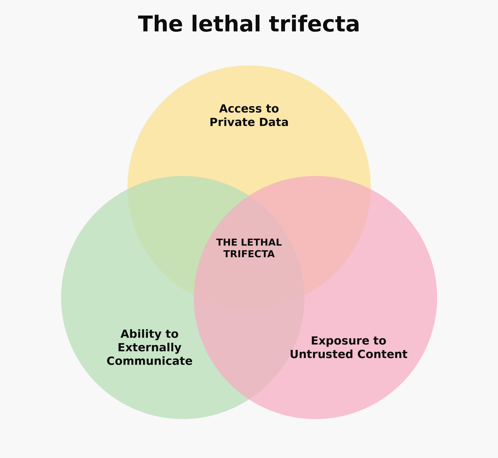

Where should an AI agent’s sandbox end?
Two areas of discussion:
--dangerously-skip-permissions inside a Docker sandbox?Is it OK to --dangerously-skip-permissions?
sudo and broad freedom inside the VMFilesystem
/tmp/proc, devices, symlinks and the Docker socketNetwork
localhostThis was a basic containment check, not a penetration test.
What can a compromised agent do with the permissions it already has?
PUT URLThe sandbox worked exactly as configured.
Docker describes its Balanced network policy as a good starting point for most workflows:
Default deny, with a baseline allowlist covering AI provider APIs, package managers, code hosts, container registries, and common cloud services.
Includes:
Security and usefulness pull in opposite directions.
It’s useful if an agent has acces to things I care about. Not ~/.ssh but:
Giving an agent permission to analyse something is not the same as giving it permission to send it elsewhere.

Host
A microVM and isolated workspace do a lot of useful work.
Data
A sandbox with broad outbound network access does not guarantee confidentiality.
Authority
Sandboxing does little to limit actions the agent is already authorised to take.
The question is not just whether the agent is sandboxed.
What can it read? Where can it communicate? What actions is it authorised to take?
Based on: samrickman.com/blog/ai-agent-sandboxes